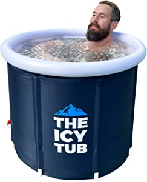
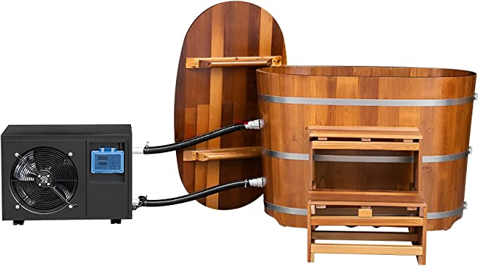
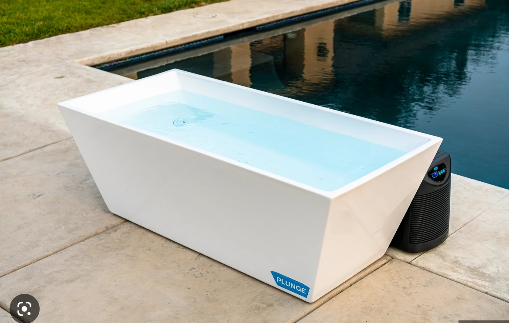

Top Cold Plunge Therapy Products
-
Level 1: The Icy Tub
The Icy Tub is a light, portable, and affordable freestanding ice bath designed for indoor and outdoor use, accommodating users up to 6'7" tall with full body coverage, insulation, and a tub cover. Great for beginners with minimal investment!
Buy this product -
Level 2: Knotless Canadian Cedar Plunge
The Knotless Canadian Cedar Wooden Hot Tub/Ice Bath is a versatile, high-quality tub featuring an LED display, a powerful 1 HP chiller/heating unit with a 32°F to 104°F temperature range, a filtration system, and a one-year warranty, offering a customizable and relaxing experience with minimal maintenance. This will set you back a little, and is for intermediate cold plungers.
Buy this product -
Level 3: The Cold Plunge
The holy grail of cold plunges. The revolutionary Cold Plunge uses powerful cooling, filtration, and sanitation to give you cold, clean water whenever you want it, making it far superior to an ice bath or chest freezer. The Plunge is safe for indoor or outdoor use and we've made installation truly plug-and-plunge. Fill your Plunge up with a hose, turn it on, set your temp (down to 39F) and get ready to change your life!
Buy this product